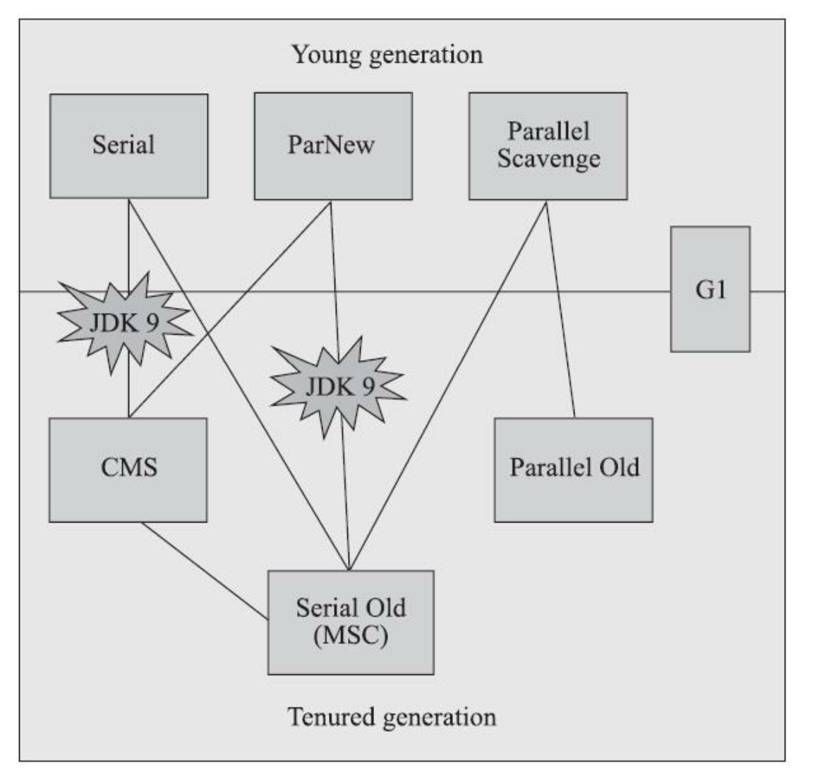
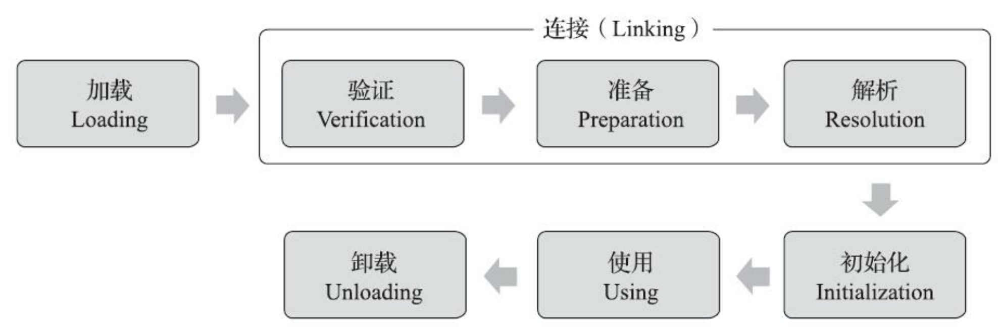

内存区域
程序计数器
Program Counter Register，当前线程所执行的字节码的行号指示器，每个线程都有一个独立的程序计数器
如果线程正在执行的是一个Java方法，这个计数器记录的是正在执行的虚拟机字节码指令的地址 如果正在执行的是Native方法，这个计数器值则应为Undefined
Java虚拟机栈
Java Virtual Machine Stack，线程私有，声明周期与线程相同
局部变量表
存放编译器可知的基本数据类型、对象引用、方法出口
如果线程请求的栈深度大于虚拟机所允许的深度，将抛出StackOverflowError异常 只要线程申请栈空间成功了就不会有OutOfMemoryError，但是如果申请时就失败，仍然是会出现OutOfMemoryError异常的
本地方法栈
Native Method Stacks 与虚拟机栈所发挥的作用是非常相似的，其区别只是虚拟机 栈为虚拟机执行Java方法(也就是字节码)服务，而本地方法栈则是为虚拟机使用到的本地(Native)方法服务。
Java堆
Java Heap，内存最大的一块，所有线程共享，在虚拟机启动时创建，存储对象实例 主流的JVM都是按照可扩展实现的，参数是-Xmx和-Xms，如果没有足够内存完成实例分配，就会抛出OutOfMemoryError
方法区
Method Area，所有线程共享，它用于存储已被虚拟机加载的类型信息、常量、静态变量、即时编译器编译后的代码缓存等数据 这区域的内存回收目标主要是针对常量池的回收和对类型的卸载 方法区无法满足新的内存分配需求时，将抛出OutOfMemoryError异常
运行时常量池
Runtime Constant Pool 方法区的一部分
直接内存
Direct Memory，堆外内存，动态扩展时可能出现OutOfMemoryError异常
对象创建
先讨论使用new关键字创建普通对象(不包括数组和Class对象)的过程
1. 检查类是否已经被加载、解析、初始化，如果没有，执行类加载的过程
2. 分配内存，是一个非常频繁操作，并发情况下并不是线程安全的
两种方案：1. CAS重试机制，其实是乐观锁，2. 预先为每个线程分配内存，如果本地缓冲区用完才需要同步锁定
3. 内存空间初始化为0值
4. 对对象进行必要的设置，主要和对象头有关
5. 调用构造方法，Class文件中的<init>()
对象的内存布局
对象头
一个部分存储自身运行时数据 哈希码(HashCode)、GC分代年龄、锁状态标志、线程持有的锁、偏向线程ID、偏向时间戳等 另外一部分是类型指针 通过这个指针可以确定该对象是哪个类的实例
实例数据
真正的有效信息
对齐填充
仅仅起着占位符的作用，保证对象起始地址必须是8字节的整数倍
垃圾收集器
对象引用
强引用 Object obj=new Object() 软引用 在系统将要发生内存溢出异常前，会把这些对象列进回收范围之中进行第二次回收 SoftReference 弱引用 被弱引用关联的对象只能生存到下一次垃圾收集发生为止 WeakReference 虚引用 只是为了能在这个对象被收集器回收时收到一个系统通知 Phant omReference
finalize()能做的所有工作，使用try-finally 或者其他方式都可以做得更好、更及时
方法区的垃圾收集机制
判定一个类型是否属于“不再被使用的类”的条件就比较苛刻了。需要同时满足下面三个条件: 1. 该类所有的实例都已经被回收，也就是Java堆中不存在该类及其任何派生子类的实例 2. 加载该类的类加载器已经被回收 3. 该类对应的java.lang.Class对象没有在任何地方被引用，无法在任何地方通过反射访问该类的方法
分代收集
两个假设 1. 绝大多数对象都是朝生夕灭的 2. 熬过越多次垃圾收集过程的对象就越难以消亡
推论 跨代引用相对于同代引用来说仅占极少数
新生代收集 Minor GC/Young GC 老年代收集 Major GC/Old GC 整堆收集 Full GC
标记清除算法（Mark-Sweep）
可能产生大量内存碎片
标记复制算法
半区复制(Semispace Copying)，浪费50%的空间 HotSpot虚拟机默认Eden和Survivor的大小比例是8∶1，只会浪费10%空间
标记整理算法（Mark-Compact）
一般用在老年代，大部分对象不会被垃圾收集的情况
常用的垃圾收集器

Serial
历史最久远的收集器 新生代采用标记复制算法 优势：简单高效 劣势：stop the world 会暂停所有的用户线程
ParNew
Serial收集器的多线程并行版本
Parallel Scavenge
采用标记复制算法，并行处理 与ParNew的不同之处在于更关注吞吐量(运行用户代码的时间与处理器总消耗时间的比值) 具备自适应调节策略
CMS
第一款真正意义上支持并发的垃圾收集器，它首次实现了让垃圾收集线程与用户线程(基本上)同时工作
Serial Old
Serial 的老年代版本，使用标记整理算法
Parallel Old
Parallel Scavenge收集器的老年代版本
CMS
Concurrent Mark Sweep，获取最短回收停顿时间为目标 基于标记清除算法实现的
- 初始标记(CMS initial mark) stop the world
- 并发标记(CMS concurrent mark)
- 重新标记(CMS remark) stop the world
- 并发清除(CMS concurrent sweep)
Garbage First(G1)
它可以面向堆内存任何部分来组成回收集 把连续的Java堆划分为多个大小相等的独立区域(Region)，每一个Region都可以根据需要，扮演新生代的Eden空间、Survivor空间，或者老年代空间。
G1从整体来看是基于“标记-整理”算法实现的收集器，但从局部(两个Region之间)上看又是基于“标记-复制”算法实现
垃圾收集器权衡的方式
如果是数据分析、科学计算类的任务，目标是能尽快算出结果，那吞吐量就是主要关注点（个人理解，CPU密集型应用） 如果是SLA应用，那停顿时间直接影响服务质量，严重的甚至会导致事务超时，这样延迟就是主要关注点（个人理解，IO密集型应用，特别是偏业务系统的应用，大量的时间耗费在数据库IO，RPC请求的网络IO等等） 而如果是客户端应用或者嵌入式应用，那垃圾收集的内存占用则是不可忽视的。
根据以上三种场景，还是回到了衡量垃圾收集齐的三个性能指标 内存占用(Footprint) 吞吐量(Throughput) 延迟(Latency)
内存分配方式
- 当Eden区没有足够空间进行分配时，虚拟机将发起一次Minor GC
- 大对象可能直接被分配到老年代
- Eden区的对象如果被移动到Survivor空间中年龄会自增1(在对象头的年龄计数器体现)，默认年龄增加到15之后会被转移到老年代
- HotSpot虚拟机并不是永远要求对象的年龄必须达到阈值才能晋升老年代，如果在Survivor空间中相同年龄所有对象大小的总和大于Survivor空间的一半，年龄大于或等于该年龄的对象就可以直接进入老年代
- 只要老年代的连续空间大于新生代对象总大小或者历次晋升的平均大小，就会进行 Minor GC，否则将进行Full GC
大对象例如 很长的字符串 或者 元素数量很庞大的数组 在Java虚拟机中要避免大对象的原因是，在分配空间时，它容易导致内存明明还有不少空间时就提前触发垃圾收集，以获取足够的连续空间才能安置好它们，而当复制对象时，大对象就意味着高额的内存复制开销。
常用工具
- jps 查询正在运行的虚拟机进程
- jstat 虚拟机统计信息监视工具
- jinfo Java配置信息工具
- jmap Java内存映像工具，用于生成堆转储快照，比如dump文件
- jstack Java堆栈跟踪工具 线程间死锁、死循环、请求外部资源导致的长时间挂起都可以使用这个命令排查
从JDK 5起，java.lang.Thread类新增了一个getAllStackTraces()方法用于获取虚拟机中所有线程的StackTraceElement对象，可以作为jstack命令的平替
java可以通过Runtime.getRuntime().exec()执行shell脚本，但是这种操作会频繁创建进程，非常消耗资源，即使执行的shell脚本非常简单。使用java内置的api完成相同的功能更好
Class文件的结构
按照顺序，依次是 1. 魔数 0xCAFEBABE 2. 副版本号 3. 主版本号 4. 常量池容量计数值 5. 常量池 6. 访问标志，表示 这个Class是类还是接口; 是否定义为public类型; 是否定义为abstract 类型; 如果是类的话，是否被声明为final; 等等 7. 类索引、父类索引与接口索引集合 8. 字段表 9. 方法表 10. 属性表
字节码指令
大多数对于boolean、byte、short和char类型数据的操作，实际上都是使用相应的对int类型作为运算类型(Computational Type)来进行的
类加载机制

自定义类加载器的方式 重写一个类加载器的findClass()或loadClass()方法
加载阶段结束后，Java虚拟机外部的二进制字节流就按照虚拟机所设定的格式存储在方法区之中了
类型数据妥善安置在方法区之后，会在Java堆内存中实例化一个java.lang.Class类的对象， 这个对象将作为程序访问方法区中的类型数据的外部接口
Java虚拟机必须保证一个类的<clinit>()方法在多线程环境中被正确地加锁同步，如果多个线程同时去初始化一个类，那么只会有其中一个线程去执行这个类的<clinit>()方法，其他线程都需要阻塞等待，直到活动线程执行完毕<clinit>()方法
比较两个类是否“相等”，只有在这两个类是由同一个类加载器加载的前提下才有意义，否则，即使这两个类来源于同一个Class文件，被同一个Java虚拟机加载，只要加载它们的类加载器不同，那这两个类就必定不相等。
双亲委派机制
在编写自定义类加载器时，如果需要把加载请求委派给引导类加载器去处理，那直接使用null代替即可
启动类加载器(Bootstrap Class Loader) 由JVM实现负责加载存放在<JAVA_HOME>\lib目录的类
扩展类加载器(Extension Class Loader) 在类sun.misc.Launcher$ExtClassLoader中以Java代码的形式实现的 它负责加载<JAVA_HOME>\lib\ext目录中，或者被java.ext.dirs系统变量所指定的路径中所有的类库。
应用程序类加载器(Application Class Loader)这个类加载器由 sun.misc.Launcher$AppClassLoader来实现。由于应用程序类加载器是ClassLoader类中的getSystemClassLoader()方法的返回值
类加载器之间的父子关系一般不是以继承(Inheritance)的关系来实现的，而是通常使用组合(Composition)关系来复用父加载器的代码
打破双亲委派机制的方式 线程上下文类加载器(Thread Context ClassLoader) Java中涉及SPI的加载基本上都采用这种方式来完成，例如JNDI、 JDBC、JCE、JAXB和JBI等。